importing packages#
import matplotlib.pyplot as plt
import seaborn as sns
import pandas as pd
import numpy as np
import the dataset#
path_to_file = '/home/kenny/Documents/miso/Ian_Hanane_python/healthcare-dataset-stroke-data.csv'
stroke_data = pd.read_csv(path_to_file)
---------------------------------------------------------------------------
FileNotFoundError Traceback (most recent call last)
Cell In[2], line 3
1 path_to_file = '/home/kenny/Documents/miso/Ian_Hanane_python/healthcare-dataset-stroke-data.csv'
----> 3 stroke_data = pd.read_csv(path_to_file)
File ~\AppData\Local\Programs\Python\Python313\Lib\site-packages\pandas\io\parsers\readers.py:1026, in read_csv(filepath_or_buffer, sep, delimiter, header, names, index_col, usecols, dtype, engine, converters, true_values, false_values, skipinitialspace, skiprows, skipfooter, nrows, na_values, keep_default_na, na_filter, verbose, skip_blank_lines, parse_dates, infer_datetime_format, keep_date_col, date_parser, date_format, dayfirst, cache_dates, iterator, chunksize, compression, thousands, decimal, lineterminator, quotechar, quoting, doublequote, escapechar, comment, encoding, encoding_errors, dialect, on_bad_lines, delim_whitespace, low_memory, memory_map, float_precision, storage_options, dtype_backend)
1013 kwds_defaults = _refine_defaults_read(
1014 dialect,
1015 delimiter,
(...) 1022 dtype_backend=dtype_backend,
1023 )
1024 kwds.update(kwds_defaults)
-> 1026 return _read(filepath_or_buffer, kwds)
File ~\AppData\Local\Programs\Python\Python313\Lib\site-packages\pandas\io\parsers\readers.py:620, in _read(filepath_or_buffer, kwds)
617 _validate_names(kwds.get("names", None))
619 # Create the parser.
--> 620 parser = TextFileReader(filepath_or_buffer, **kwds)
622 if chunksize or iterator:
623 return parser
File ~\AppData\Local\Programs\Python\Python313\Lib\site-packages\pandas\io\parsers\readers.py:1620, in TextFileReader.__init__(self, f, engine, **kwds)
1617 self.options["has_index_names"] = kwds["has_index_names"]
1619 self.handles: IOHandles | None = None
-> 1620 self._engine = self._make_engine(f, self.engine)
File ~\AppData\Local\Programs\Python\Python313\Lib\site-packages\pandas\io\parsers\readers.py:1880, in TextFileReader._make_engine(self, f, engine)
1878 if "b" not in mode:
1879 mode += "b"
-> 1880 self.handles = get_handle(
1881 f,
1882 mode,
1883 encoding=self.options.get("encoding", None),
1884 compression=self.options.get("compression", None),
1885 memory_map=self.options.get("memory_map", False),
1886 is_text=is_text,
1887 errors=self.options.get("encoding_errors", "strict"),
1888 storage_options=self.options.get("storage_options", None),
1889 )
1890 assert self.handles is not None
1891 f = self.handles.handle
File ~\AppData\Local\Programs\Python\Python313\Lib\site-packages\pandas\io\common.py:873, in get_handle(path_or_buf, mode, encoding, compression, memory_map, is_text, errors, storage_options)
868 elif isinstance(handle, str):
869 # Check whether the filename is to be opened in binary mode.
870 # Binary mode does not support 'encoding' and 'newline'.
871 if ioargs.encoding and "b" not in ioargs.mode:
872 # Encoding
--> 873 handle = open(
874 handle,
875 ioargs.mode,
876 encoding=ioargs.encoding,
877 errors=errors,
878 newline="",
879 )
880 else:
881 # Binary mode
882 handle = open(handle, ioargs.mode)
FileNotFoundError: [Errno 2] No such file or directory: '/home/kenny/Documents/miso/Ian_Hanane_python/healthcare-dataset-stroke-data.csv'
stroke_data.head()
| id | gender | age | hypertension | heart_disease | ever_married | work_type | Residence_type | avg_glucose_level | bmi | smoking_status | stroke | |
|---|---|---|---|---|---|---|---|---|---|---|---|---|
| 0 | 9046 | Male | 67.0 | 0 | 1 | Yes | Private | Urban | 228.69 | 36.6 | formerly smoked | 1 |
| 1 | 51676 | Female | 61.0 | 0 | 0 | Yes | Self-employed | Rural | 202.21 | NaN | never smoked | 1 |
| 2 | 31112 | Male | 80.0 | 0 | 1 | Yes | Private | Rural | 105.92 | 32.5 | never smoked | 1 |
| 3 | 60182 | Female | 49.0 | 0 | 0 | Yes | Private | Urban | 171.23 | 34.4 | smokes | 1 |
| 4 | 1665 | Female | 79.0 | 1 | 0 | Yes | Self-employed | Rural | 174.12 | 24.0 | never smoked | 1 |
A little bit of data preprocessing#
stroke_data.isnull().sum()
id 0
gender 0
age 0
hypertension 0
heart_disease 0
ever_married 0
work_type 0
Residence_type 0
avg_glucose_level 0
bmi 201
smoking_status 0
stroke 0
dtype: int64
### getting the bmi mean for non-null values
bmi_mean = stroke_data[~stroke_data['bmi'].isna()]['bmi'].mean()
### filling the missing bmi values with the mean
na_index = stroke_data[stroke_data['bmi'].isna()].index
stroke_data.loc[na_index, 'bmi'] = bmi_mean
stroke_data.isnull().sum()
id 0
gender 0
age 0
hypertension 0
heart_disease 0
ever_married 0
work_type 0
Residence_type 0
avg_glucose_level 0
bmi 0
smoking_status 0
stroke 0
dtype: int64
Matplotlib and histogram#
plt.hist(stroke_data.avg_glucose_level, bins=30, alpha=0.6, edgecolor='black')
plt.xlabel('Value')
plt.ylabel('Probability density')
plt.title('Normalized Histogram (Density)')
plt.show()
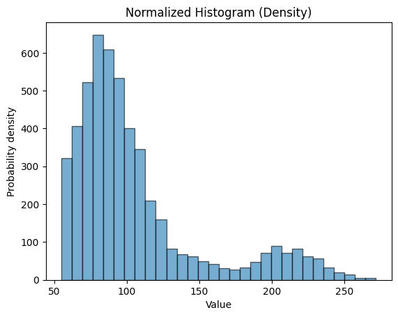
Changing font size and plot size#
plt.figure(figsize=(6, 4))
plt.hist(stroke_data.avg_glucose_level, bins=30, alpha=0.6, edgecolor='black')
plt.xlabel('Value', fontsize=14)
plt.ylabel('Probability density',fontsize=14)
plt.xticks(fontsize=12)
plt.yticks(fontsize=12)
plt.title('Normalized Histogram (Density)', fontsize=18)
plt.show()
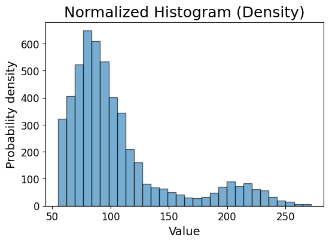
Saving the plot#
plt.figure(figsize=(6, 4))
plt.hist(stroke_data.avg_glucose_level, bins=30, alpha=0.6, edgecolor='black')
plt.xlabel('Value', fontsize=14)
plt.ylabel('Probability density',fontsize=14)
plt.xticks(fontsize=12)
plt.yticks(fontsize=12)
# plt.grid(axis='y', alpha=0.75)
plt.title('Normalized Histogram (Density)', fontsize=18)
plt.savefig('avg_glucose_level_histogram.pdf', dpi=300, bbox_inches='tight')
plt.show()
Seaborn and scatter plot#
plt.figure(figsize=(6, 4))
sns.scatterplot(data=stroke_data, x='age', y='bmi')
plt.title('Scatter Plot of bmi vs Age')
plt.show()
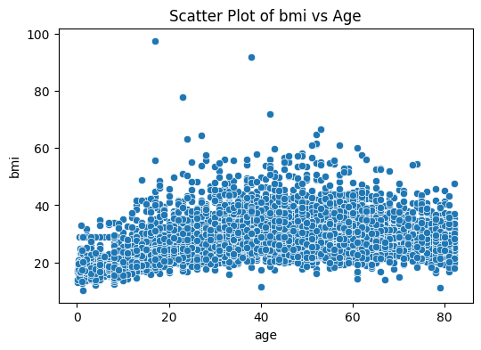
Color#
plt.figure(figsize=(6, 4))
sns.scatterplot(data=stroke_data, x='age', y='bmi', hue='stroke', alpha=0.6)
plt.title('Scatter Plot of bmi vs Age')
plt.show()
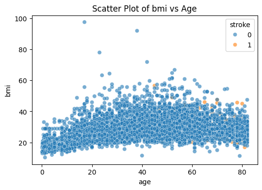
plt.figure(figsize=(6, 4))
sns.scatterplot(data=stroke_data[stroke_data['stroke']==0], x='age', y='bmi', alpha=0.6)
sns.scatterplot(data=stroke_data[stroke_data['stroke']==1], x='age', y='bmi', alpha=0.6)
plt.title('Scatter Plot of bmi vs Age')
plt.show()
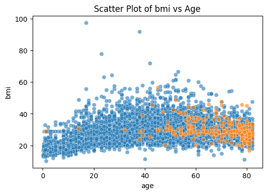
Multiple plots#
fig, axes = plt.subplots(2, 1, figsize=(5, 10))
sns.scatterplot(data=stroke_data, x='age', y='bmi', alpha=0.6, ax=axes[0])
sns.scatterplot(data=stroke_data, x='age', y='avg_glucose_level', alpha=0.6, ax=axes[1])
plt.show()
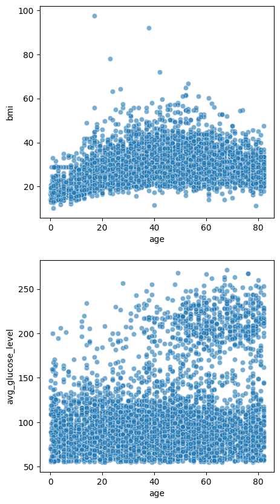
fig, axes = plt.subplots(2, 1, figsize=(5, 8), sharex=True)
sns.scatterplot(data=stroke_data, x='age', y='bmi', alpha=0.6, ax=axes[0])
axes[0].set_title('scatter plot of bmmi vs age')
sns.scatterplot(data=stroke_data, x='age', y='avg_glucose_level', alpha=0.6, ax=axes[1])
axes[1].set_title('scatter plot of avg_glucose_level vs age')
plt.tight_layout()
plt.show()
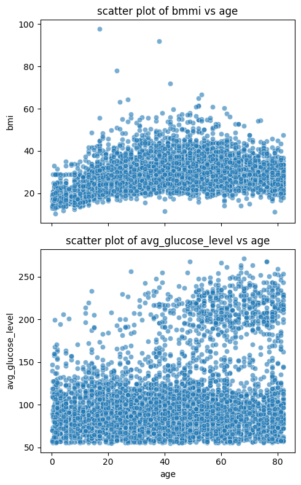
Seaborn and distribution visualization#
box plot#
sns.boxplot(data=stroke_data, x="heart_disease", y="bmi", hue="stroke", fill=False, gap=.1)
plt.title('Box Plot of BMI by Heart Disease and Stroke Status')
plt.show()
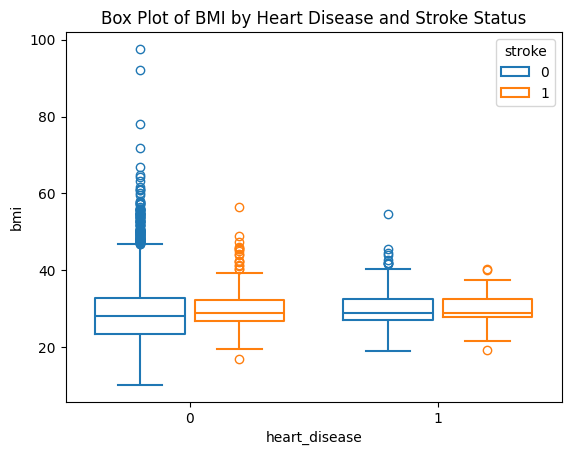
violin plot#
sns.violinplot(data=stroke_data, x="heart_disease", y="bmi", hue="stroke", split=True, gap=.1, inner="quart")
plt.title('Violin Plot of BMI by Heart Disease and Stroke Status')
plt.show()
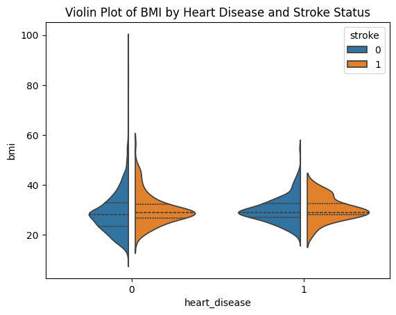
Visualizing correlation#
stroke_data.head()
| id | gender | age | hypertension | heart_disease | ever_married | work_type | Residence_type | avg_glucose_level | bmi | smoking_status | stroke | |
|---|---|---|---|---|---|---|---|---|---|---|---|---|
| 0 | 9046 | Male | 67.0 | 0 | 1 | Yes | Private | Urban | 228.69 | 36.600000 | formerly smoked | 1 |
| 1 | 51676 | Female | 61.0 | 0 | 0 | Yes | Self-employed | Rural | 202.21 | 28.893237 | never smoked | 1 |
| 2 | 31112 | Male | 80.0 | 0 | 1 | Yes | Private | Rural | 105.92 | 32.500000 | never smoked | 1 |
| 3 | 60182 | Female | 49.0 | 0 | 0 | Yes | Private | Urban | 171.23 | 34.400000 | smokes | 1 |
| 4 | 1665 | Female | 79.0 | 1 | 0 | Yes | Self-employed | Rural | 174.12 | 24.000000 | never smoked | 1 |
Pairplot#
df_pairplot = stroke_data[['age', 'bmi', 'avg_glucose_level', 'stroke']]
sns.pairplot(
df_pairplot,
hue="stroke",
diag_kind="kde",
markers=["o", "s"],plot_kws={'s': 10}
)
plt.suptitle("Pairwise Relationships in Iris", y =1.02)
plt.show()
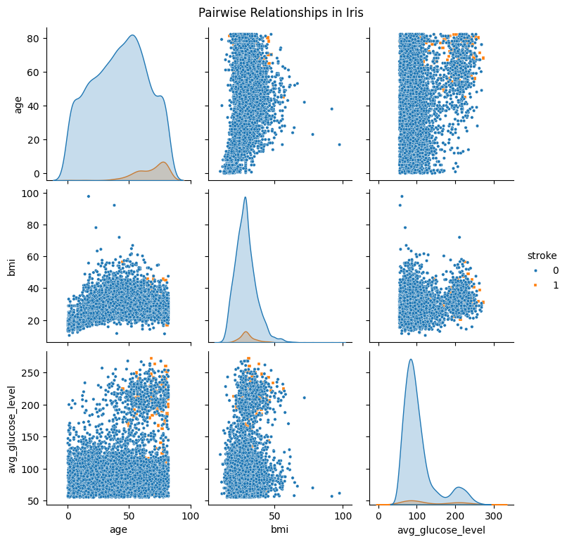
df_pairplot_reordered = pd.concat([df_pairplot[df_pairplot['stroke'] == 0],df_pairplot[df_pairplot['stroke'] == 1]]).reset_index(drop=True)
df_pairplot_reordered.head()
| age | bmi | avg_glucose_level | stroke | |
|---|---|---|---|---|
| 0 | 3.0 | 18.0 | 95.12 | 0 |
| 1 | 58.0 | 39.2 | 87.96 | 0 |
| 2 | 8.0 | 17.6 | 110.89 | 0 |
| 3 | 70.0 | 35.9 | 69.04 | 0 |
| 4 | 14.0 | 19.1 | 161.28 | 0 |
sns.pairplot(
df_pairplot_reordered,
hue="stroke",
diag_kind="kde",
markers=["o", "s"],plot_kws={'s': 10}
)
plt.suptitle("Pairwise Relationships in Iris", y =1.02)
plt.show()
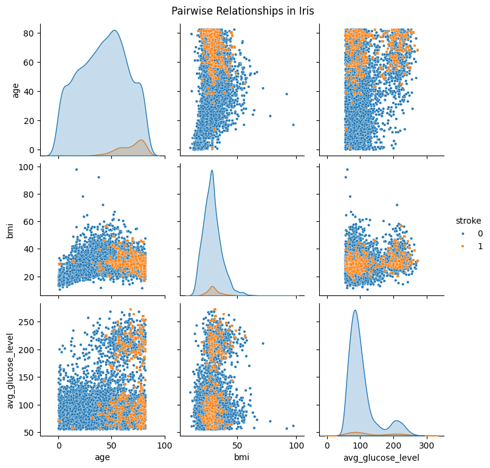
Heatmap#
stroke_numerical = stroke_data.select_dtypes(include=['float64'])
stroke_numerical.head()
| age | avg_glucose_level | bmi | |
|---|---|---|---|
| 0 | 67.0 | 228.69 | 36.600000 |
| 1 | 61.0 | 202.21 | 28.893237 |
| 2 | 80.0 | 105.92 | 32.500000 |
| 3 | 49.0 | 171.23 | 34.400000 |
| 4 | 79.0 | 174.12 | 24.000000 |
correlations_df = stroke_numerical.corr()
plt.figure(figsize=(8, 6))
sns.heatmap(
correlations_df,
annot=True,
fmt=".2f",
)
plt.title("Correlation Matrix")
plt.show()
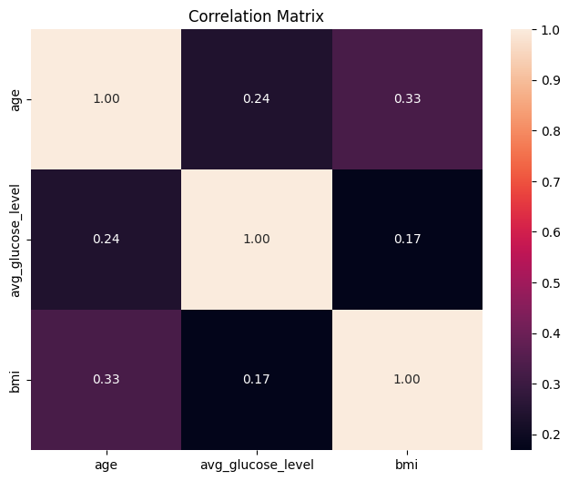
Linear regression and line plot#
from sklearn.linear_model import LinearRegression
from sklearn.model_selection import train_test_split
X_train, X_test, y_train, y_test =train_test_split(stroke_data['age'].values, stroke_data['bmi'].values, test_size=20, shuffle=False)
model = LinearRegression()
model.fit(X_train.reshape(-1, 1), y_train.reshape(-1, 1))
LinearRegression()In a Jupyter environment, please rerun this cell to show the HTML representation or trust the notebook.
On GitHub, the HTML representation is unable to render, please try loading this page with nbviewer.org.
LinearRegression()
stroke_data['age'].max(), stroke_data['age'].min()
(82.0, 0.08)
X_values = np.linspace(0,80,50)
predicted_bmi = model.predict(X_values.reshape(-1, 1))
plt.plot(X_values, predicted_bmi, label='Regression Line')
plt.xlabel('Age')
plt.ylabel('predicted BMI')
plt.title('Line plot of predicted BMI vs Age')
plt.legend()
plt.show()
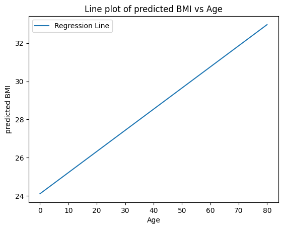
plt.scatter(stroke_data['age'], stroke_data['bmi'], label='Data Points', alpha=0.5, s= 10)
plt.plot(X_values, predicted_bmi, label='Regression Line', color='red')
plt.xlabel('Age')
plt.ylabel('predicted BMI')
plt.title('Line plot of predicted BMI vs Age')
plt.legend()
plt.show()
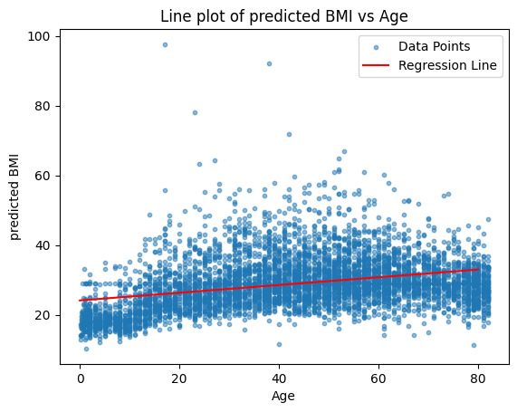
sns.regplot(data=stroke_data, x="age", y="bmi",scatter_kws={'s': 10}, line_kws={'color': 'red'})
plt.title('Line plot of predicted BMI vs Age')
plt.show()